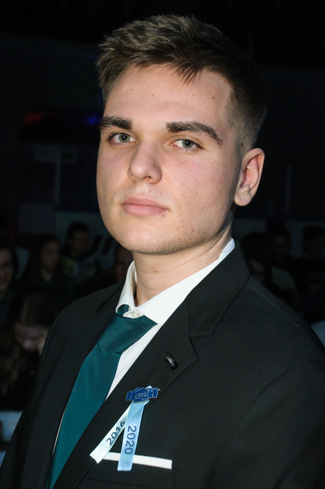

Bemutatkozás
 Szegh Dominiknek hívnak. 2002. március 25-én születtem Budapesten. Jelenleg a családommal Újpesten élek. A Budapesti Műszaki és Gazdaságtudományi Egyetem Gépészkarának gépészmérnöki szakának elsőéves hallgatója vagyok.
Már gyermekkoromban kiderült, hogy a matematika nagy erősségem és ez végig fog kísérni az utamon. Később a fizika is elkezdett komolyabban érdekelni és elkezdtem vele foglalkozni. Ekkor már nem volt kérdés a továbbtanulás terén, hogy melyik egyetemet válasszam. Azonban a szak kiválasztása már egy picivel nehezebb volt, de végül a gépészmérnöki szak mellett döntöttem. Ezt a szakmát már régóta ismertem hisz nagypapám 40 évet tanított az egyetemen gépészmérnök végzettséggel, így tőle sok információt megtudtam a szakmával kapcsolatban, ami csak megerősítette azt a tudatot, hogy ezt szeretném választani. Szeretnék új megoldásokat, új ötleteket kitalálni, a kifejlesztésükben részt venni és maradandót alkotni.